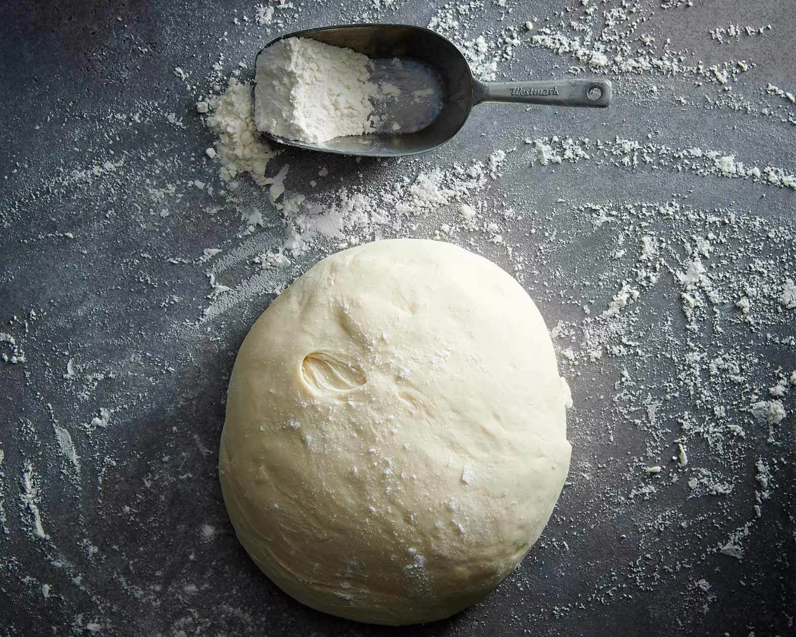

Mehl und Salz in einer Schüssel mischen, Hefe zerbröckeln, daruntermischen.
Wasser und Öl dazugiessen, zu einem weichen, glatten Teig kneten.
Zugedeckt bei Raumtemperatur ca. 1.5 Std. aufs Doppelte aufgehen lassen.